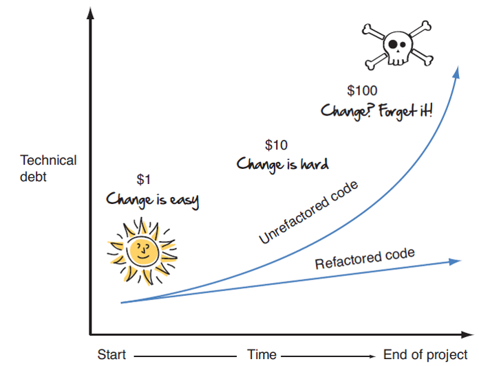
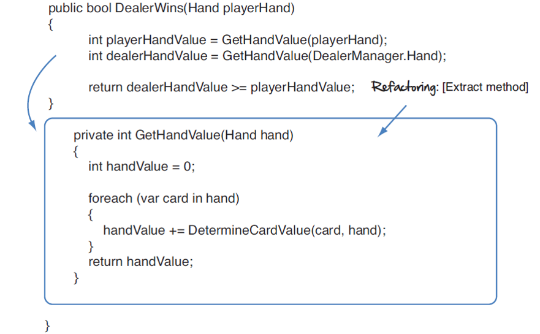

REFACTORIZAR: PAGAR LA DEUDA TÉCNICA
Objetivos:
Definir ¿Que es la deuda tecnica?
Determinar los casos donde aplica el concepto de "Deuda Tecnica"
Definir ¿Que es la refactorizacion?
Objetivos:
Definir ¿Que es la deuda tecnica?
Determinar los casos donde aplica el concepto de "Deuda Tecnica"
Definir ¿Que es la refactorizacion?
Al igual que una casa con una hipoteca, el software tiene deudas que deben pagarse.
Por ejemplo: un cliente para el que desarrolló una aplicación, le llama para incorporar nuevas funcionalidades. Luego de la negociación ud empieza a trabajar. El código de su sistema está en varios computadores, por lo que cada cambio debe replicarlo en todas ellas. Además, el código base es muy difícil de entenderlo, y el programador que lo hizo ya no trabaja en su empresa. Sin embargo, ese código puso su empresa en producción y hay que mantenerlo. para hacer esto bien, usted va a necesitar varios días para limpiar el código base existente antes de comenzar a agregar las nuevas funcionalidades.
Deuda técnica es la acumulación continua de atajos, cortes, duplicación y otros pecados que regularmente cometemos en contra de nuestro código base para ser más rápidos y cumplir el cronograma. Puede tomar muchas formas (código de espagueti, complejidad excesiva, duplicación y descuido general). Cada transgresión contra el código inicialmente puede parecer pequeña o insignificante. Pero como todas las formas de deuda, es el efecto acumulativo que se da en el tiempo el que duele.

¿Qué es la refactorización?
Refactorización es la práctica de hacer continuamente pequeños, incrementales mejoras en el diseño de su software sin cambiar el comportamiento externo.
Es una manera de pagar sistemáticamente nuestra deuda técnica a medida que avanzamos.
Es una manera de mejorar y mantener la integridad y el diseño de nuestro software que nos permita alcanzar los objetivos de hoy y estar en una buena posición para manejar los desafíos aún desconocidos del mañana.
Cuando se refactoriza un código, no se agrega nueva funcionalidad ni se corrige errores, se mejora la comprensibilidad del código
haciéndole más fácil de comprender y más susceptible de cambios.
Cada vez que se cambia el nombre de un método o variable mal nombrados en un esfuerzo por hacer que sea más fácil de leer y entender, se está refactorizando. Ejemplo:
decimal sal; à decimal salario; [Renombrar variable]
public decimal Calc() àpublic decimal CalcularImpuestoTotal() [Renombrar método]

En base al video colocado en la parte superior, refactorizar al menos una seccion del codigo realizado en clase
Obra publicada con Licencia Creative Commons Reconocimiento Compartir igual 4.0